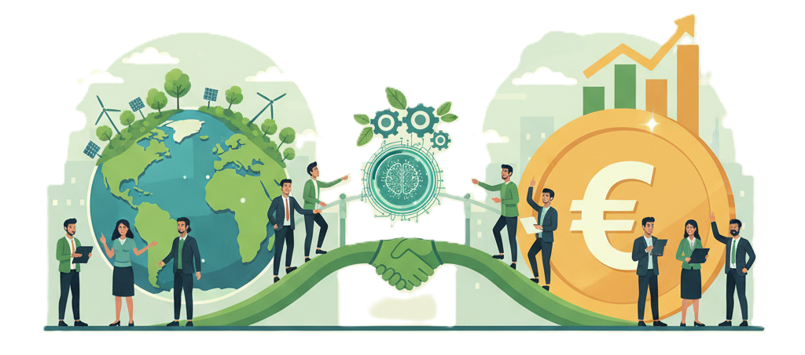
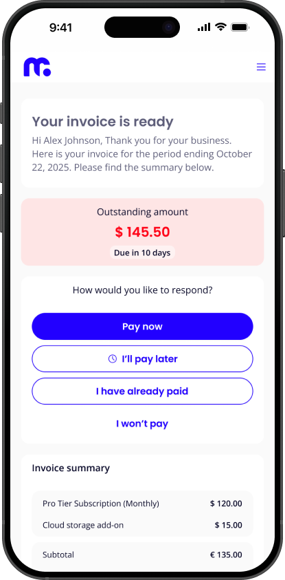
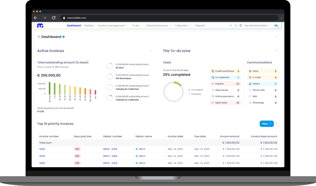
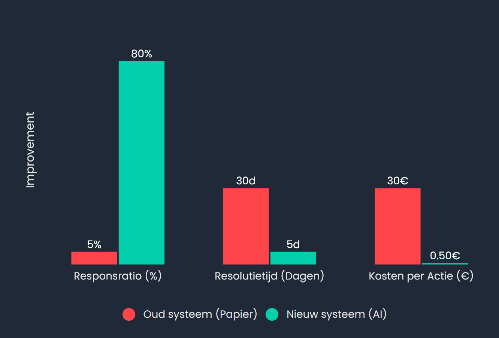

The AI Revolution in Credit Management
From Reactive Rework to Proactive Results

Impact on Sustainability & Debt Issues
From Reactive Rework to Proactive Results

Impact on Sustainability & Debt Issues
Today we'll show how this hyper-personalized approach works. The same data, a totally different impact.
Select a 'tone of voice' to personalize the presentation.
The Problem (1/2)
The old world is burning up in paper, waste, and CO₂ — time for something better.
The baseline analysis identifies a 'hidden factory' of O2C friction, leading to suboptimal DSO, high OPEX, and unnecessary friction. Our house is on fire. As we speak, the corporate world (the Polluter) ignores a 'hidden factory' that is destroying our future. A Hero (the Company) rises to defeat an Old Enemy: the 'hidden factory' of chaos, rework, and waste. Every team (our dear colleagues) struggles with a 'hidden factory' of misunderstandings and time-wasting work.

15,000 - 25,000
sheets of paper per medium-sized company, per year.
1 - 2 TONS
CO₂ per average company, per year.
The Problem (2/2)
The "legacy" model doesn't segment by intent, and harms viable customers (assets) who *want* to pay, but (temporarily) *cannot*. The 'old' model is built on greed. It kicks people who are already down, purely for short-term profit. "How dare you!" The 'foolish' king treats friend and foe alike, and drives his best allies (the customers) into the enemy's camp. The 'old' system is deaf. It doesn't hear that our dear customers mean 'yes', but are saying 'not right now'. It breaks relationships needlessly.
Interest and fines pile up, pushing parties deeper into trouble and creating a negative spiral.
Risk: Uncollectibility & Bankruptcy
Unpredictable cash flow and high write-offs threaten the continuity of one's own business.
Risk: Unable to pay employees
The failure: The "blunt axe" (generic reminder) increases customer churn and damages the relationship asset. The crime: The "blunt axe" (generic reminder) creates poverty and destroys SMEs. This is immoral. The betrayal: The "blunt axe" (generic reminder) breaks the alliance and leads to loss. The tragedy: The "blunt axe" (generic reminder) is a lack of listening and costs us good relationships.
Solution 1: Impact & Results

Old world: broadcast, repeat, hope for a response
Transformation

New world: listen, understand, connect
Get ready. We will now show how the new way of working, supported by AI, completely surpasses traditional credit management systems. Time is running out! We must see how AI-driven innovation surpasses our outdated systems and underscores the need for action. Behold! Witness the rise of a new era, forged by AI, that definitively overshadows the old titans of credit management! Hi everyone! Get ready, because we're going to show you how AI makes our work super fun and easy, and how those old systems are completely outdated! Yes!
A data-driven comparison between the legacy workflow and the AI-optimized O2C cycle. You choose. Do you choose the 'hidden factory' that is destroying our world? Or do you choose the only right path? How the Hero (the company) casts the **Enemy** (chaos) into the abyss and saves the kingdom. How the Team (our colleagues) solves **that thing we don't like** (all the frustrating 'must-dos') and finds joy again.
Reactive, manual, and driven by "exception handling". Disgusting. Arrogant, wasteful, and driven by "profit above all". Weak, manual, and driven by "Darkness wins". Impersonal, manual, and driven by "Computer says no".
€15 - €30
Per paper invoice
5-15%
Response Ratio (Paper)
~17.6 Million Liters of Water
(7+ Olympic swimming pools wasted)
~16,700 kg CO₂e
(Emissions from paper, printing & transport)
~210 Trees
(Cut down for invoices and reminders)
Focus: Costs, Friction, Manual Intervention Focus: Profit, Regardless of the Cost to the Planet Focus: Survival, Chaos, Defeat Focus: Rules, Friction, Misunderstanding
Proactive, digital, and driven by "first-time-right". Responsible, digital, and driven by "There is no planet B". Powerful, proactive, and driven by "Victory is near". Empathetic, digital, and driven by "We'll solve this together".
€2.25 - €3.50
Per digital invoice
60-80%
Response Ratio (Digital/SMS)
100% Reduction
Of all this paper, water & transport consumption
~16,700 kg CO₂e
Saved per year
~17.6M Liters of Water
Saved per year
Focus: Value Creation, Speed & ESG Data Focus: Survival, Planet & Future Focus: Winning, Glory & Strategy Focus: Relationship, Understanding & Success
The implementation of AI-driven processes yields direct, measurable ecological (ESG) and operational (OPEX) gains. Stopping 'business as usual' is not a choice, it's a necessity. The numbers prove that the 'right' way is also the 'profitable' way. The 'smart' path leads not only to glory, but also to measurable spoils. Behold the reward of our battle. A 'smarter' approach is not only nicer for the people, it also yields direct, measurable, positive results for everyone.
60-80%
Response Ratio on SMS
(vs. 5-15% on paper)
50-80%
Fewer physical customer visits
(Savings on fuel & travel time)
(Per average company, per year)
1-2
Trees saved
500kg - 1.5T
CO₂ Reduction
(Per year)
210
Trees saved
17.6M
Liters of water saved
16,700
Kg CO₂e saved
This is the *same debtor* managed by *your* company in different markets. AI lets you compare performance, see they pay your BE entity better, and find out *why*. It's the same debtor. They are paying your BE team, but not your UK team. Stop making excuses. The data is telling you what to do. The General (you) can now see the entire battlefield. The enemy (TechCorp) is weak on the BE front, but strong in the UK. Time to share the winning strategy. Look! TechCorp pays our BE colleagues so well! Let's see what they're doing and share that positivity with our UK and NL teams!
Subsidiary NL
Payment Score
72
Profile Effectiveness
65%
On-time Payments
75%
Issues / Invoices
9%
Subsidiary BE
Payment Score
81
Profile Effectiveness
85%
On-time Payments
92%
Issues / Invoices
3%
Subsidiary UK
Payment Score
68
Profile Effectiveness
60%
On-time Payments
70%
Issues / Invoices
12%
Solution 2: Impact & Results
Never doubt again: The dashboard transforms gut feeling into data-driven certainty. Never doubt again: The dashboard shows the confrontational reality you ignored. Never doubt again: The oracle (dashboard) speaks the truth and illuminates the path. Never doubt again: Your smart colleague (the dashboard) gives you the confidence to make the right choice.
Dare to sell: Identify and convert opportunities you previously saw as unacceptable risks. Dare to sell: Stop rejecting opportunities out of fear. The data shows what *is* possible. Dare to sell: Conquer markets you feared, now armed with strategic foresight. Dare to sell: Say 'yes' to that customer, knowing the data helps you be a good partner.
Prevent the invisible: See friction, risks, and opportunities you couldn't see before. Prevent the disaster: See the problems (that you didn't want to see) before they escalate. Prevent defeat: See the enemy's traps (friction) that were previously hidden. Prevent the pain: See where the customer is stuck (what you didn't see) and help them proactively.

The 'smart' model segments by intent: is it unwillingness or inability? The AI agent provides predictive advice. The 'right' model asks the confrontational question: is this unwillingness, or is it inability caused by the system? The 'enlightened' agent sees the truth: is this a traitor, or a wounded ally? The Agent knows the difference. The 'smart' model *really* listens: is this someone who won't pay, or someone who can't? The AI agent hears the difference.

A relationship score based on financial data *and* 'soft' data, like the tone of emails and history of disputes.
The AI agent calculates with high probability what, how much, and when will be paid.
Automatically offers a "breathing pause" (e.g., 4 months on hold) to parties who are struggling but are still viable.
The SME customer buys the autumn collection, causing a temporary liquidity shortage. They are profitable, but have low margins. The AI agent recognizes this seasonal pattern and advises the creditor to bridge the pause. The 'legacy' approach would have written off this customer asset. The 'smart' AI agent saves the relationship *and* the predicted cash flow. The shop owner invests in the (fast fashion) autumn collection. Can't pay. The 'old' system would have bankrupted this SME for a few euros. The 'right' AI agent sees the owner is viable, stops the penalty machine, and advises a breathing pause. This is socially *and* economically just. The brave shop owner bets on the autumn collection, but the treasury is empty. The 'dumb' hammer of the debt collector threatens to fall. But the All-Seeing Agent recognizes the seasonal pattern as a recurring trial. The Agent forges a pact (a breathing pause), saves the ally, and secures the future gold stream (cash flow). The apparel store (a loyal customer!) is a bit tight on cash from buying the autumn collection. They want to pay, it's just not a good time. The 'old' system sends an angry, cold letter and chases away this good customer, who just had bad luck. The 'social' AI agent listens, recognizes the pattern, and suggests a flexible solution. The relationship is saved. How wonderful!
The result of 'smart' and data-driven segmentation: a pure win-win. Improved DSO *and* improved customer retention. The proof that 'doing the right thing' doesn't cost money, it *makes* money. **Greed** (asocial capital) loses. The result of an enlightened strategy: the treasury overflows *and* the allies are more loyal than ever. The proof that listening pays off. By showing empathy, you strengthen the relationship *and* the cash flow. A pure win-win.
6% - 74%
(Median: 20 days paid faster)
+10-20%
More successful payments
83%
of problematic debts correctly identified before write-off.
+25%
more opportunities for well-intentioned customers (the 'helpers') to buy.
The AI agent doesn't just identify risk; it forces action. It triages all debtors into actionable priority lists. High-risk cases cannot be ignored. This isn't a 'to-do' list; it's a 'must-do-now' list. The system forces you to confront the highest risks. No more delays, no more 'later'. The agent lines up the enemy. Your team must now face them, one by one. Victory is defined by resolution. Inaction is not an option. The AI finds our customers who are most at-risk. It's our 'urgent-help' list. We run through it to make sure everyone gets the support they need, fast!
Debtors with >€100,000 outstanding and invoices >60 days overdue. These are critical accounts that require immediate, personal intervention to secure payment or log a formal promise/dispute. Inaction is not an option.
| Key Account | Invoice # | Amount Due | Days Overdue |
|---|---|---|---|
| TechCorp Global | INV-10023 | €115,200.00 | 92 |
| Innovate Solutions | INV-10045 | €204,100.00 | 75 |
| Enterprise Logistics | INV-10051 | €130,050.00 | 61 |
High-value debtors with invoices 30-60 days overdue. These accounts are at a high risk of becoming critical. The goal is to secure payment or a promise before they move into the 60+ day bracket.
| Customer | Invoice # | Amount Due | Days Overdue |
|---|---|---|---|
| Regional Builders | INV-10112 | €45,500.00 | 45 |
| Coastal Imports | INV-10119 | €62,000.00 | 38 |
| Mid-Market Goods | INV-10124 | €31,800.00 | 31 |
All other clients with high-value invoices that are just-due or 1-10 days overdue. Proactive, automated follow-ups are crucial here to prevent them from aging and ensure a 'first-time-right' payment culture.
| Customer | Invoice # | Amount Due | Days Overdue |
|---|---|---|---|
| Nexus Data | INV-10201 | €22,000.00 | 8 |
| Apex Design | INV-10203 | €19,500.00 | 5 |
| Swift Partners | INV-10208 | €25,100.00 | 2 |
Core Principle: A 100% resolution rate. High-risk items cannot remain on the list. They must be resolved. The Only Rule: Zero tolerance for inaction. These lists must be cleared. Every single day. No exceptions. The Creed: Leave no enemy standing. The list must be conquered. Resolution is the only path to glory. Our Promise: No one is left behind. This list must be cleared, so every person gets the connection they deserve.
The AI Agent: The AI Guardian: The God-Weapon (AI): The AI Colleague: AI transforms the credit manager from a reactive 'cost center' to a proactive 'value driver'. AI isn't a 'nice tool', it's a weapon that forces the manager to transform from 'polluter' to 'solver'. AI promotes the 'soldier' (manager) to 'general' (strategist) who wins the war before the first battle. AI gives the manager 'super-hearing', changing them from 'collector' (hunter) to 'helper' (partner).
The ESG Link: The Debt Repaid: "font-bold text-teal-400 tone-span episch">The Enemy Defeated: The Friction Solved: The most efficient (OPEX) and profitable (DSO) route is also the most sustainable (ESG). The 'right' way is the 'greenest' way. It's disgusting that we didn't do this all along. Profit without morals is debt. The 'smartest' strategist (AI) wins on two fronts: the treasury (profit) *and* the land (environment). Glory and sustainability go together. The 'nicest' way (for the customer) is *also* the 'smartest' (for cash flow) and the 'greenest' (for the planet).
The Customer Asset: The Person Saved: "font-bold text-teal-400 tone-span episch">The Ally Saved: The Relationship Saved: 'Smart', predictive data leads to a lower DSO *with* higher customer retention and LTV. 'Honest' data stops the penalty machine and saves viable SMEs from the abyss. 'All-seeing' data saves the loyal ally and turns a potential debt into an eternal pact. 'Listening' data leads to a lower DSO, not despite, but thanks to a better customer relationship.

Questions?
Stefan van Tulder
MaxCredible
s.vantulder@maxcredible.com